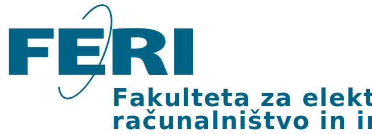

- OBVESTILA
- AIPS
- EŠTUDIJ
- URNIKI
- IKT STORITVE
- KNJIŽNICA
- ENGLISH 
- O NAS
- ŠTUDIJ
- RAZISKOVANJE
- AKADEMIJA FERI
- KONTAKTI
Oglasna deska
Obvestila 1 od 3 od 3
Datum objave: 12. julij 2024 | Datum poteka: 25. julij 2024 | Avtor: Mateja Vodušek
Govorilne ure pri asistentu dr. Damijanu Novaku 17. 7. in 24. 7. 2024 odpadejo.
Oddelek za izobraževalno dejavnost
Datum objave: 12. julij 2024 | Datum poteka: 25. julij 2024 | Avtor: Mateja Vodušek
Študente obveščamo, da bodo govorilne ure pri doc. dr. Lili Nemec
Zlatolas med 1. 7. 2024 in 30. 8. 2024 potekale po predhodnem
dogovoru preko emaila ali MS Teamsov.
Hvala za razumevanje.
Oddelek za izobraževalno dejavnost
Datum objave: 12. julij 2024 | Datum poteka: 25. julij 2024 | Avtor: Mateja Vodušek
Govorilne ure pri asistentu dr. Damijanu Novaku 17. 7. in 24. 7. 2024 odpadejo.
Oddelek za izobraževalno dejavnost
Univerza v Mariboru
Fakulteta za elektrotehniko, računalništvo in informatiko
Koroška cesta 46, 2000 Maribor
feri@um.si +386 2 220 7000